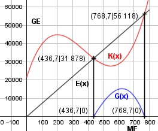
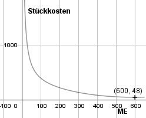

Aufgabe 82 Ein Betrieb hat Fixkosten Kf von 21 600 GE und variable Kosten Kv(x) von 0,0008x3 - 0,9x2 + 264x und E(x) = 73x. a) Wie hoch ist der Kostenanstieg bei einer Steigerung der Produktion von 100 auf 101 ME? Wie groß ist die Änderungsrate für 100 ME? b) Wo liegt die Gewinnzone? c) Wie groß ist die Produktionsmenge M im Betriebsoptimum? a) K(x) = 0,0008x3 - 0,9x2 + 264x + 21 600 K'(x) = 0,0024x2 - 1,8x + 264 K(100) = 39 800 GE K(101) = 39 907,3 GE Der Anstieg beträgt 39 907,3 GE - 39 800 GE = 107,3 GE/ME K'(100) = 108 GE/ME Der Kostenanstieg von 100 ME auf 101 ME entspricht etwa der Änderungsrate für x = 100 ME. b) Die x-Koordinaten der Gewinnschwelle und -grenze entsprechen den Nullstellen der Gewinnfunktion. G(x) = E(x) - K(x) G(x) = 73x - (0,0008x3 - 0,9x2 + 264x + 21 600) G(x) = - 0,0008x3 + 0,9x2 - 191x - 21 600 G'(x) = - 0,0024x2 + 1,8x - 191 Newtonsches Näherungsverfahren. Wertetabelle: 400 500 600 700 800 -5200 7900 15 000 11 300 -8000 Vorzeichenwechsel zwischen 400 und 500 --> gewählt x01 = 440 Vorzeichenwechsel zwischen 700 und 800 --> gewählt x02 = 759 -0,0008 * 4403 + 0,9 * 4402 - x1 = 440 - ---------------------------------- -0,0024 * 4402 + 1,8 * 440 - 191 - 191 * 440 - 21 600 -------------------------------- -0,0024 * 4402 + 1,8 * 440 - 191 x1 = 436,7 -0,0008 * 7593 + 0,9 * 7592 - x21 = 759 - ------------------------------------- -0,0024 * 7592 + 1,8 * 759 - 191 - 191 * 759 - 21 600 --------------------------------- -0,0024 * 7592 + 1,8 * 759 - 191 x21 = 769,2 -0,0008 * 769,23 + 0,9 * 769,22 - x2 = 769,2 - ------------------------------------ -0,0024 * 769,22 + 1,8 * 769,2 - 191 - 191 * 769,2 - 21 600 -------------------------------------- -0,0024 * 769,22 + 1,8 * 769,2 - 191 x22 = 768,7 Die Gewinnzone liegt zwischen 436,7 ME und 768,7 ME.

c) 0,0008x3 - 0,9x2 + 264x + 21 600 k(x) = ----------------------------------- x 21 600 k(x) = 0,0008x2 - 0,9x + 264 + --------- x 21 600 k'(x) = 0,0016x - 0,9 - -------- x2 21 600 k''(x) = 0,0016 + -------- --> x3 immer > 0, weil x > 0 21 600 0,0016x - 0,9 - -------- = 0 | *x2 x2 0,0016x3 - 0,9x2 - 21 600 = 0 Wertetabelle: x 300 400 500 k'(x) -59 400 -63 2005 -46 600 x 600 700 k'(x) 0 86 200 Hornerschema: Nullstelle bei x1 = 600 Hornerschema: 0,0016 -0,9 0 -21 600 x1 = 600 0,96 36 21 600 -------------------------------------- 0,0016 0,06 36 0 k''(x) > 0 --> k(600) = 0,0008 * 6002 - 0,9 * 600 + 264 + 21 600 + --------- = 48 600 --> Minimum (600 ME|48 GE) Polynomdivision: 0,0016x3 - 0,9x2 - 2 600 : (x - 600) = -(0,0016x3 - 0,96x2) --------------------------- 0,06x2 - 21 600 -(0,06x2 - 36x) ------------------- 36x - 21 600 -(36x - 21 600) ---------------- 0 Ergebnis = 0,0016x2 + 0,006x + 36 0,0016x2 + 0,06x + 36 = 0 |:0,0016 x2 + 37,5 x + 22 500 = 0 p, q - Formel: p = 37,5, q = 22 500 x2,3 = x2,3 = -18,75 ± x2,3 = -18,75 ± --> keine weiteren Nullstellen Das Produktionsmenge x im Betriebsoptimum = 600 ME. Die Kosten liegen dabei bei K(600) = 0,0008 * 6003 - 0,9 * 6002 + 264 * 600 + + 21 600 = 28 800 GE.